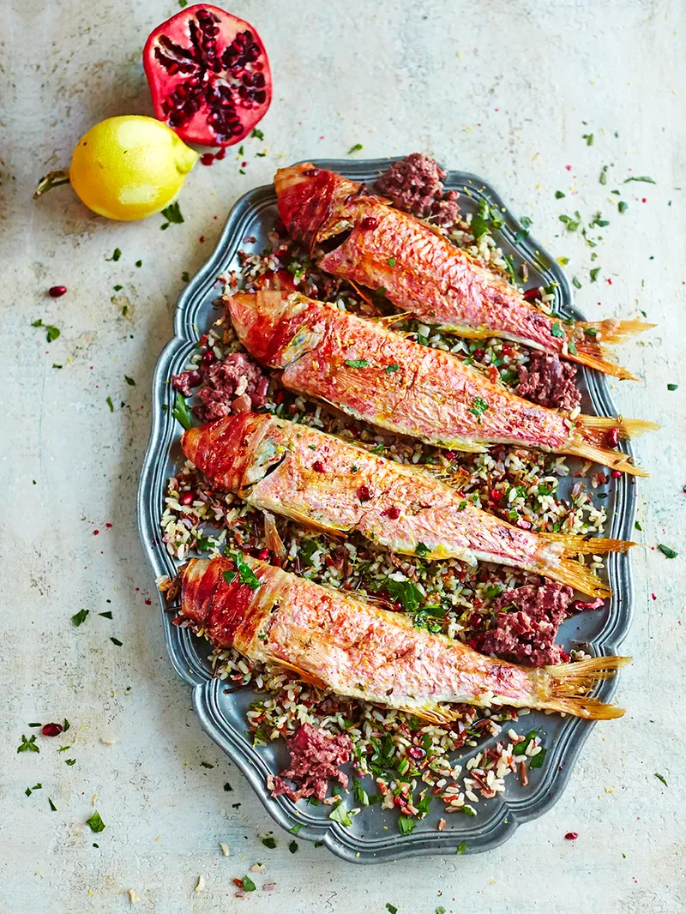

Red mullet with jewelled wild rice

Ingredients
- 4 x 250 g whole red mullet , scaled and gutted, from sustainable sources
- ½ a bunch of fresh lemon thyme
- 4 slices of higher-welfare thin-cut smoked pancetta
- 300 g mixed wild rice
- 1 pomegranate
- ½ a bunch of fresh mint
- ½ a bunch of fresh flat-leaf parsley
- olive oil
- 1 lemon
- extra virgin olive oil
Description
- Start by preparing your jewelled wild rice. Cook the rice according to the packet instructions, then drain and rinse under cold water. Set aside while you work on your fish.
- Preheat the oven to 220°C/425°F/gas 7. Slash the mullet skin three to four times (don’t cut too far into the flesh). Pop a few sprigs of lemon thyme into each cavity and season well.
- Wrap the head of each fish in a slice of pancetta and drizzle with a little olive oil. Pop the fish on a large roasting tin and roast for 12 minutes, or until cooked through.
- Meanwhile, make your tapenade. Drain and soak the olives in a bowl of cold water for 5 minutes. Drain well, then remove the stones.
- Peel the garlic, then bash in a pestle and mortar with the dried chilli flakes and fennel seeds until fine. Tip into a bowl.
- Roughly chop the almonds, olives and sundried tomato and add to the bowl, followed by the spice mix and extra virgin olive oil.
- Tip the rice into a large bowl. Halve and bash the pomegranate with a spoon so the seeds fall into the bowl.
Home page